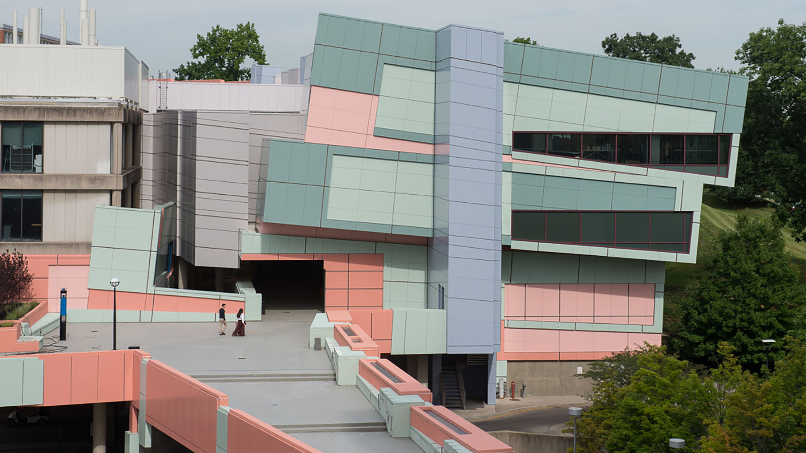

Education
University of Cincinnati - Cincinnati, OH
BA of Psychology
2016 - 2021

- Originally began in the DAAP Fine Art program, but switched to a focus in Psychology.
University of Louisville - Louisville, KY
College Credits Earned
2018 - 2019
St. Patrick's High School - Maysville, KY
High School Diploma
2012 - 2016
 About Me
Jobs
About Me
Jobs